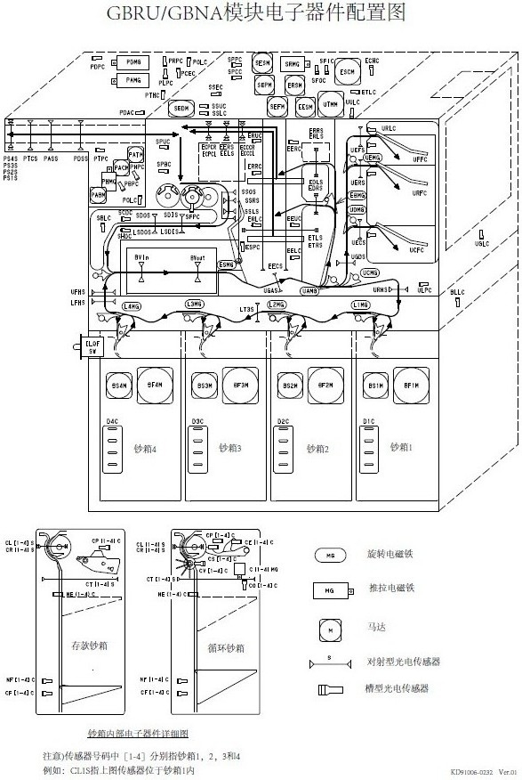

GBRU存取款模块错误代码查询器
重置
00
22
23
24
25
26
27
28
29
30
31
32
33
34
35
36
37
38
39
40
41
42
43
44
45
46
47
48
49
50
51
52
01
02
03
04
05
06
07
08
09
10
11
12
13
14
15
16
17
18
19
20
21
显示主代码的查询结果
显示故障信息，定位传感器位置，并在下方显示其功能
显示传感器的功能，并定位。
RAS命令帮助文本
